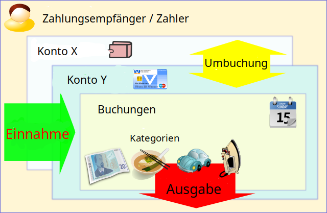

Money Manager Ex (MMEX) ist eine kostenlose, quelloffene, plattformübergreifende, einfach zu bedienende persönliche Finanzsoftware. Sie hilft in erster Linie dabei, die eigenen Finanzen zu organisieren und den Überblick wo, wann und wie das Geld ausgegeben wird zu behalten.
MMEX enthält alle grundlegenden Funktionen, die sich 90% der Benutzer von einer Anwendung für persönliche Finanzen wünschen. Die Design-Ziele sind die Konzentration auf Einfachheit und Benutzerfreundlichkeit – Eine Anwendung, die tagtäglich verwendet werden kann.
MMEX kann als ein Computer-Scheckbuch betrachtet werden, mit dem Konten ausgleichen, und Finanzberichte erstellt und verwaltet werden können.
MMEX hilft einen Überblick über die Finanzen und das Vermögen zu behalten.
Der Zweck dieses Handbuches ist es, Ihnen (dem Benutzer) einige grundlegende Informationen zur Verwendung von MMEX zu geben. Diese Bedienungsanleitung wird sich mit der Programmentwicklung weiterentwickeln, und sollte nach jeder Programmaktualisierung auf Änderungen und neue Funktionen geprüft werden.
Seine Finanzen zu organisieren, erfordert ein gewisses Maß an Disziplin. Der Umgang mit Finanzen kann kompliziert werden, wenn kein klares Verständnis darüber besteht, welche Einnahmen und Ausgaben vorhanden sind, also wieviel Geld man bekommt und wofür es ausgegeben wird.
Schulden entstehen in der Regel wenn der Cashflow eingeschränkt ist, weil die Ausgaben die Einnahmen übersteigen. Dann muß für den Kauf der notwendigsten Dinge Geld geliehen werden, um so den Cashflow aufrechtzuerhalten.
Der erste Schritt für einen besseren Finanzüberblick ist es gute finanzielle Aufzeichnungen zu haben. Erst wenn ein klares Verständnis dafür besteht, wofür das Geld ausgegeben wird, kann vernünftig entschieden werden, wo was eingespart werden kann, wenn das Geld mal nicht ausreicht. Wenn Geld geliehen mußte, können auch die Schulden besser verwaltet, und eine Überschuldung vermieden werden.
Wussten Sie, dass Sie im letzten Jahr 600€ für den Kauf von Eintrittskarten ausgegeben haben? Waren alle Veranstaltungen wirklich sehenswert? Glauben Sie jetzt, dass Sie vielleicht die 600€ besser gespart hätten, nachdem Sie gestern erfahren haben, dass unerwartete Wartungsarbeiten am Auto notwendig werden? Natürlich gibt es keine richtige oder falsche Antwort, wie man Geld ausgeben sollte. Sie verdienen das Geld und entschieden auf welche Art und Weise Sie es ausgeben. Aber Sie können immer versuchen Ihr Geld besser anzulegen und bessere Renditen zu erzielen.
Dabei unterstützt eine Finanz-Software. Sie hilft die Finanzdaten zusammenzufassen und so aufzubereiten, dass ein besserer Einblick über das finanzielle Geschehen entsteht. Es muß aber bedacht werden, dass die Software nur so gut ist, wie die Daten die sie verarbeitet ("Garbage In Garbage Out").
MMEX bildet die reale Welt nach, um bei der Verwaltung der persönlichen Finanzen zu helfen.
Im Allgemeinen erhalten wir Geld von jemandem für eine Leistung, die wir erbringen (z.B. als Gehalt), oder ein Produkt, das wir verkaufen. Dieses wird als Einzahlung in MMEX bezeichnet. Wenn ein Artikel gekauft oder eine (Dienst-)Leistung genutzt wird, wird das Geld, das dafür ausgeben wird als Ausgabe in MMEX eingetragen. Diejenigen, die das Geld erhalten oder die uns Geld geben, werden in MMEX als Zahlungsempfänger bezeichnet.
Da hoffentlich nicht das Ganze erhaltene Geld ausgeben wird, wird ein Platz gebraucht, an dem das übriges Geld aufbewahrt wird. Dieses ist im Allgemeinen, ein Konto bei einer Bank oder auch mehrere Konten bei verschiedenen Finanzinstituten oder als Bargeld in der eigenen Tasche. In MMEX sind alle diese Orte Konten.
Wenn wir Geld ausgeben oder erhalten, sehen wir dieses in MMEX als eine Buchung der eine Kategorie zugeordnet wird, um den Grund für die Einzahlung oder Ausgabe anzugeben. Wenn wir Geld von einem unserer Konten auf ein anderes übertragen, zum Beispiel Geld vom Geldautomaten holen und damit das Geld vom Konto in den Bargeldbestand übernehmen, wird dieses in MMEX als eine Umbuchung zwischen zwei MMEX Konten betrachtet.
Die folgende Abbildung zeigt vereinfacht die Zusammenhänge:
Um dieses alles zu verfolgen, nutzt MMEX eine Datenbank in der alle Informationen gespeichert und miteinander vernüpft werden.
Die Datenbank, die MMEX erzeugt, wird in einer .mmb Datei gespeichert.
Falls Sicherheitsfunktionen wie Verschlüsselung verwendet werden, wird die Datenbasis in einer .emb Datei gespeichert.
In diesem Fall kann die Datei mit einem Passwort geschützt werden, welches jedes Mal beim Öffnen abgefragt wird.
Wie bei jedem Computersystem, sollten wichtige Daten gegen Fehlfunktion des Systems gesichert werden. MMEX beinhaltet ein Backup-System, mit dem eine datierte Kopie der Datenbank erzeugt wird, wenn sie geöffnet wird, und / oder wenn Änderungen an den Daten erkannt wurden. Standardmäßig werden bis zu 4 Kopien für jede Datenbank erzeugt, bevor die älteste überschrieben wird, die Anzahl kann konfiguriert werden.
Wenn MMEX gestartet wird, wird die zuletzt geöffnete Datenbank geladen. Wenn keine Datenbank gefunden wird, wird dem Benutzer die Option angezeigt, entweder eine bestehende Datenbank zu öffnen oder eine neue zu erstellen.
Wenn Sie eine neue Datenbankdatei benötigen, wählen Sie aus dem Menü die Option Datei → Neue Datenbank….
Damit werden Sie aufgefordert, einen neuen Namen und ein Verzeichnis für die .mmb Datenbankdatei anzugeben. Die neue Datenbankdatei wird jetzt erstellt und der Datenbank Assistent wird angezeigt, der dabei hilft die Datenbank zu initialisieren und ein erstes Konto einzurichten.
Die Datenbank Assistent fordert zuerst dazu auf, die Basiswährung für die Datenbank und einen (optionalen) Datenbanknamen festlegen.
MMEX beinhaltet einem Standardsatz an Währungen, aus der Sie ihre spezifische Währung aussuchen können. Diese Basiswährung wird als Standard für alle neue Konten verwendet. Für abweichende Kontowährungen (z.B. Währungskonten) kann die verwendete Kontowährung später in den Kontoeinstellungen geändert werden.
Mit dem Datenbanknamen kann der Zweck der Datenbank definiert werden. Dieser ist optional, er wird als Titel in den Berichten verwendet. Der Datenbankname wird in der Titelleiste angezeigt werden, und zeigt damit an welche Datenbankdatei gerade geöffnet ist.
Bei Bedarf können beide Einstellungen später im Menü: Extras → Einstellungen geändert werden.
Die neue .mmb Datenbankdatei ist nicht verschlüsselt.
Um die Datenbasis in MMEX zu verschlüsseln, muß sie im verschlüselten Format gespeichert werden. Dieses erfolgt mit der Menüoption Datei → Datenbank speichern unter…. Im Fenster einen Dateinamen angegeben und als Dateityp Verschlüsselte MMEX-Databank (.emb) auswählen. Auf dem gleichen Weg kann auch eine verschlüsselte Datenbasis dauerhaft entschlüsselt werden, in dem als neuer Dateityp MMEX-Databank (.mmb) gesetzt wird.
Wenn eine neue Datenbankdatei anlegt wird, werden Sie automatisch vom Assistenten aufgefordert ein Konto zu erstellen.
Um manuell ein neues Konto zu erstellen, wählen Sie aus dem Menü Konten → Neues Konto….
Damit wird der Kontoassistent aufgerufen, der den Kontonamen und den Kontotyp abfrägt und mit diesen Informationen ein neues Konto anlegt. Der Kontotyp ist unveränderlich, während der Name jederzeit über die Option Kontoinformation bearbeiten geändert werden kann.
Name des Kontos: Dies ist ein Pflichtfeld. Es wird empfohlen Konten eindeutige Namen, die den realen Bankkonten entsprechen zu geben. Als Beispiel: Bei der Citibank besteht ein Sparkonto und eine Visa Kreditkartenkonto. Die entsprechenden Konten in MMEX werden als Citibank Sparkonto und Citibank Visa benannt.
Kontotyp: MMEX unterstützt verschiedene Kontoarten:
Für die Kontoeinrichtung wird der Kontostand am Einrichtungsdatum benötigt. Diese Information erhalten Sie aus Ihrem letzten Kontoauszug oder Kreditkartenabrechnung. Zusätzlich können weitere optionale Informationen wie Kontonummer, Bankname und -adresse, Webseite, weitere Kontaktdaten und Zugangsdaten in den passenden Feldern mit angeben werden. Im Feld Anmerkungen können zusätzliche Notizen gespeichert werden.
Der aktuelle Kontosaldo zum Einrichtungszeitpunkt wird im Feld Kontostand zu Beginn angegeben. Ab diesem Zeitpunkt müssen dann nur noch die Buchungen eingeben werden, um den aktuellen Kontostand zu erhalten.
Der Kontostatus kann auf offen oder geschlossen gesetzt werden. Geschlossene Konten sind nicht mehr aktiv und können im Navigationsbereich ausgeblendet werden, um die Ansicht aufzuräumen. Die Anzeigeoption kann dauerhaft wird im Menü, Extras → Einstellungen… im Punkt Ansicht geändert werden. Siehe Navigator Tipps
Kontowährung: Diese wird zunächst auf die Basiswährung der Datenbank eingestellt, die beim Erstellen der Datenbank festgelegt wurde, und kann in den Kontoeinstellungen geändert werden. Der Wechselkurs für die Währung kann über das Menü Extras → Währungen verwalten… geändert oder aktualisiert werden.
Beispiel: Sie führen alle Konten in Euro, haben aber noch ein USD Währungskonto. Durch Aktualisierung des Wechselkurses für den USD wird der korrekte Wert des Währungskontos bestimmt.
Konten könne als Favoriten gekennzeichnet werden. Damit erscheinen sie oben im Navigator in einer eigene Rubrik. Siehe auch Navigator Tipps.
Es gibt ein Girokonto mit 500€, ein Sparkonto mit 1.250€, eine Mastercard mit 250€ Ausgaben, eine Visa-Karte mit 475€ Ausgaben, ein Wohnungshypothekendarlehen mit 230.965€ Restschuld und einen Festgeldvertrag mit 5000€.
Dafür werden die folgenden Konten anlegt:
| Konto Typ | Kontobezeichnung | Eröffnungssaldo |
|---|---|---|
| Bankkonten | Girokonto | 500,00 € |
| Sparkonto | 1.250,00 € | |
| Kreditkarte | MasterCard | - 250,00 € |
| Visa-Karte | - 475,00 € | |
| Darlehen | Wohnungshypothek | - 230.965,00 € |
| Festgeld | Sparfond | 5000,00€ |
Auf der Übersichtsseite wird im Gesamtsaldo für die Bankkonten 1,025€ und - 230.965,00 € für die Terminkonten angezeigt.
Wenn jetzt eine Überweisung vom Girokonto auf die Mastercard durchgeführt wird (z.B. am Monatsende), wird sich am Saldo nichts ändern, da beide Konten zu den Bankkonten gehören. Wenn dagegen eine Überweisung von Girokonto auf das Darlehenskonto durchgeführt wird (z.B monatliche Tilgung), würden die Salden dieses zeigen, und es kann die Restschuld abgelesen werden. Mit geplanten Buchungen können regelmäßige Zahlungen automatisiert werden.
Für bestehende Konten können die Kontoinformationsfelder auf folgende Weise bearbeitet werden:
Damit wird der Kontobearbeitungsdialog angezeigt, in dem die Werte geändert werden können.
Mit OK werden die geänderten Informationen gespeichert.
Nachdem ein neues Konto angelegt und angezeigt wird, indem es aus der Navigationsstruktur oder der Übsersichtseite ausgewählt wurde, können neue Buchungen wie folgt hinzugefügt werden:
Nach dem Aufruf erscheint der "Neue Buchung" Dialog, in dem die notwendigen Werte eingegeben werden:
Der Bearbeitungsdialog für bestehenden Buchungen kann auf mehrere Arten aufgerufen werden:
Jede dieser Aktionen öffnet den Bearbeitungsdialog mit den Buchungsdetails. Hier könne die Änderungen vorgenommen und mit Klick auf OK gespeichert werden.
Buchungen können entweder durch vorgegebene Filter oder mit den Filterfunktionen in der Buchungsansicht selektiert werden. Damit werden nur die gewünschten Buchungen dargestellt und können zusammen ausgewählt und bei Bedarf geändert werden.
Die sichtbaren Buchungen können auch zusammen gelöscht werden, indem sie alle markiert werden und "löschen" gewählt wird.
Als Voreinstellung werden neue Buchungen als ungeprüft eingegeben und nach Überprüfung auf den Status überprüft gesetzt.
Der Buchungsstatus kann entweder im Bearbeitungsdialog oder im Kontextmenü geändert werden. Die schnellste Möglichkeit geht über die Tastatuskürzel:
Um eine oder mehrere Buchung(en) als abgeglichen zu markieren, einfach diese in der Buchungsübersicht auswählen und die R Taste drücken. Um die Buchungen(en) wieder als ungeprüft zu markieren die U Taste drücken.
MMEX zeigt den Buchungsstatus ob ungeprüft, bestätigt, usw. mit verschiedene Symbolen an.
Wenn eine Überpüfung nicht notwendig ist, kann die Voreinstellung für neue Buchungen in den Einstellungen auch auf "Bestätigt" gesetzt werden. (Menü Extras → Einstellungen… Abschnitt Andere.)
Buchungen könnten Probleme aufweisen, denen nachgegangen werden soll (z.B. fehlende Informationen, Unstimmigkeiten mit dem Kontoauszug). Diese können mit dem Status Nachverfolgung markiert werden, und werden dann in MMEX mit einem anderen Symbol angezeigt.
Um eine Buchung in der Buchungsübersicht für die Nachverfolgung zu markieren, die Buchung auswählen und die F Taste drücken.
In den Einstellungen sind 7 verschiedene Farben zur Markierung von Buchungen festgelegt, die beliebig angepaßt werden können.
Diese können einzelnen Buchungen beim Erstellen oder Bearbeiten zugewiesen werden.
In der Buchungsübersicht kann markierten Buchungen eine bestimmte Farbe mit der Tastenkombination Strg+1
bis Strg+7 zugewiesen werden.
Mit Strg+0 wird die Farbe wieder gelöscht.
MMEX stellt verschiedene Möglichkeiten zur Buchungssuche zur Verfügung.
Das Anmerkungsfeld in einer Buchung kann in der Kontodarstellung durchsucht werden. Unterhalb der Buchungsliste in der Kontodarstellung befindet sich die Sucheingabe rechts von der Lupe. Durch eine Klick auf die Lupe oder dem Betätigen der Eingabe Taste geht die Suche zum ersten Ergebnis. Weitere Klicks/Tastenbetätigungen springen zu den folgenden Ergebnissen. Die Suche unterscheidet zwischen Groß- und Kleinschreibung.
Um bestimmte Zahlungsempfänger zu finden, öffnen Sie die Zahlungsempfängerverwaltung über den Menüpunkt: Extras → Zahlungsempfänger verwalten….
Geben Sie im Fenster „Zahlungsempfängerverwaltung“ im unteren Feld Ihre Suchanfrage ein. Bei der Suche wird nicht zwischen Groß- und Kleinschreibung unterschieden, während Sie tippen, wird die Liste der Zahlungsempfänger mit allen Übereinstimmungen gefiltert.
Wenn Sie den genauen Namen oder die Schreibweise eines Zahlungsempfängers nicht kennen, können Sie den Platzhalter ? (Fragezeichen) als Ersatz für ein einzelnes Zeichen oder den Platzhalter * (Sternchen) als Ersatz für ein oder mehrere Zeichen verwenden.
Zahlungsempfänger sind die Personen oder Institutionen, die wir bei Ausgaben für erhaltene Waren oder Dienstleistungen bezahlen. Im Fall von Einnahmen, z.B. von Gehalt oder Verkäufen ist der Zahlungsempfänger derjenige der uns das Geld gibt (richtiger wäre Zahlungsleister aber das wird zu lang)
Die Zahlungsempfängerverwaltung wird mit dem Menüpunkt: Extras → Zahlungsempfänger verwalten… geöffnet.
Im Zahlungsempfängerverwaltungsdialog können neue Zahlungsempfänger hinzugefügt, und bestehende bearbeitet oder gelöscht werden.
Um einen neuen Zahlungsempfänger hinzuzufügen:
Es kann auch ein Zahlungsempfänger in der Liste ausgewählt werden, und dann im Kontextmenü Bearbeiten oder Löschen verwendet werden, um die gewünschte Aktion auszuführen.
Um einen Zahlungsempfänger zu löschen, muss sichergestellt werden, dass dieser in keiner Buchungen verwendet wird, indem:
Dadurch wird der Zahlungsempfänger frei, so dass er anschließend gelöscht werden kann.
Kategorien geben an, aus welchem Grund eine Ausgabe getätigt oder ein Einnahme erzielt wird.
Eine Kategorie wird im Allgemeinen verwendet, um Einnahmen oder Ausgaben zu erfassen. Da MMEX die Möglichkeit bietet, Geld zwischen Konten zu überweisen, ist es empfehlenswert, eigene Kategorien zur Erfassung von Umbuchungen zu verwenden. Auf diese Weise festgestellt werden, welches Beträge aus welchem Grund überwiesen wird, z. B. als Rückzahlung für ein Darlehen. Dieses wird dann nicht als Einnahme oder Ausgabe im Gesamtbild angezeigt. Die Verwendung der gleichen Kategorie für Einnahmen und Ausgaben würde die Summen verfälschen.
Beispiel: Wenn die Kosten für Unterhalt eines Auto aufzeichnen werden sollen, könnten die folgende Kategorien verwendet werden:
Die ersten 4 Unterkategorien werden zur Erfassung der Ausgaben verwendet. Wenn Benzinkosten erstattet werden (z.B. vom Arbeitgeber), wird Benzingeld als zusätzliche Einkommenskategorie verwendet. Auf diese Weise kann der korrekten Betrag für den Unterhalt eines Autos ermittelt werden. Dies wird deutlicher, wenn Budgets verwendet werden.
Wenn eine neue Buchung hinzugefügt wird, kann mehr als eine Kategorie verwendet werden um die Buchung zu erfassen. Dieses wird als geteilte Kategorie bezeichnet.
Die gesamte Buchung mit geteilten Kategorien ist entweder eine Ein- oder eine Auszahlung. Einzelne Teilkategorien können jedoch unabhängig davon als Aus- oder Einzahlung mit eventuell negativen Vorzeichen kategorisiert werden.
Beispiel Dividendenzahlung, die Buchung könnte aus folgenden Teilbeträgen und -kategorien bestehen:
Split Kategorien können in der Detailansicht einer Buchung angezeigt und bearbeitet werden. (Schaltfläche)
Sie können den Kategorieverwaltungsdialog über den Menüpunkt Extras → Kategorien verwalten… aufrufen und damit neue Kategorien und Unterkategorien hinzufügen und bestehende bearbeiten oder löschen.
So fügen Sie eine neue Kategorie hinzu:
Um eine neue Unterkategorie hinzuzufügen:
Sie können Unterkategorien verschachteln, weitere Informationen sind hier verfügbar: nested categories #1477.
Sie können die Namen einer Kategorie ändern, indem Sie die Kategorie/Unterkategorie in der Liste auswählen, die Schaltfläche Bearbeiten verwenden, den Namen im Textfeld ändern, und dann mit der Schaltfläche OK abspeichern.
Eine nicht verwendete Kategorie kann gelöscht werden, indem sie in der Liste ausgewählt wird und dann die Löschen Schaltfläche betätigt wird.
Folgendermaßen kann sichergestellt werden, dass keine Buchung die zu löschenden Kategorie / Unterkategorie verwendet:
Nachdem die Kategorie nicht mehr verwendet wird, kann sie gelöscht werden.
TODO, some information is available here: Addition of "classes" or "tags" #5439.
To update information about Tags, update https://github.com/moneymanagerex/moneymanagerex/blob/master/docs/en_US/index.html.
Da MMEX überall verwendet werden kann, muß es unterschiedlichste Währungen berücksichtigen. Beim Anlegen einer neuen Datenbasis wird normalerweise die lokale Währung als Standardwährung angegeben. Falls diese nicht in der Liste der bereitgestellten Währungen vorhanden ist, kann sie neu angelgt werden.
MMEX erlaubt es mehrere Währungen parallel zu verwenden. Jedes Konto besitzt seine eigene Währungseinstellung, die auf die Standardwährung von MMEX voreingestellt ist, und in den Kontoeinstellungen jederzeit geändert werden kann.
Die Währungsverwaltung wird mit dem Menüpunkt: Extras → Währungen verwalten… geöffnet.
Eine neue Währung hinzufügen
Wenn mehr als eine Währung benutzt wird kann im Feld Umwandlung in Basiskurs der Umrechnungskurs in Bezug auf die Standardwährung angegeben werden.
Für automatische Währungsaktualisierungen muß das korrekte Währungssymbol angegeben werden.
MMEX ermöglicht es CSV-Dateien mit beliebiger Felderreihenfolge zu importieren. Damit ist es nicht notwendig vor dem Import CSV Dateien in das MMEX Format zu konvertieren.
Der CSV Import Dialog wird aus dem Menü Datei → Importieren von… → CSV Datei… aufgerufen.
Für den Import wird zuerst die Datei aus der die Buchungen importiert werden sollen ausgewählt und dann das Konto in das die Buchungen eingetragen werden sollen. Anschliesend werden die entsprechenden MMEX Felder den Spalten in der CSV Datei zugeordnet und das korrekte Datumsformat und Trennzeichen gesetzt. MMEX importiert nun die CSV-Datei mit den angegebenen Formatinformationen.
Für den Import können feste Formate als Voreinstellung angelgt werden. Eines ist das MMEX CSV Datenformat, welches vordefiniert ist und hilfreich ist um Daten von einer MMEX Datenbasis in eine andere zu kopieren. Um diese Format schnell einzusehen ist es am einfachsten ein MMEX Konto in eine CSV-Datei zu exportieren und sich dann das erstellte Format anschauen.
Die CSV Feld Optionen sind wie folgt:
Nach dem CSV Import sind alle Buchungen zur "Nachverfolgung" markiert. Dieses kann in der Buchungsansicht oder im Kontextmenü dann nach Überprüfung wie unter "Buchungen" beschrieben geändert werden.
XML Dateien im Excel-Format XML-Kalkulationstabelle 2003
können in MMEX importiet werden.
Das Vorgehen zum Import und Feldauswahl ist das Gleiche wie beim CSV Datei Import.
Damit können bei Bedarf Buchungen aus Excel zu importiert werden.
Quicken Interchange Format (QIF) ist eine offene Spezifikation für das Lesen und Schreiben von Finanzdaten auf Medien (z.B. Dateien). Eine QIF-Datei hat in der Regel die folgende Struktur:
! Type: Typ Bezeichnerstring [einzelnes Zeichen Zeilencode] Literalzeichenfolge Daten ... ^ [einzelnes Zeichen Zeilencode] Literalzeichenfolge Daten ... ^
Jeder Datensatz endet mit einem ^ (Caret).
Beispiel für eine QIF Buchung:
!Type:Bank Header
Typ: Bank Rubrik
D6 / 1/94 Datum
T-1.000,00 Betrag
N1005 Zahl
PBank der Hypotheken Payee
^ Ende der Buchung
Das QIF Format ist älter als das Open Financial Exchange (OFX) Format. Die Unfähigkeit importierte Buchungen mit den aktuellen Kontobuchungen abzugleichen ist eine der wichtigsten Einschränkungen von QIF. QIF wird im allgemeinen von Finanzinstituten verwendet um herunterladbare Kontoinformationen bereitzustellen.
MMEX kann die folgenden QIF Buchungstypen in ein Konto zu importieren (Sie können den QIF Typ einer Datei erkennen, indem Sie sie in einem Texteditor öffnen):
Alle aus einer QIF Datei importierten Buchungen haben den Status "Zu prüfen". Sie können den Status aller importierter Buchungen ändern indem Sie alle markieren und den neuen Status aus dem Kontextmenü unter Markierungen auswählen.
Für MMEX gibt es eine einfache Web-Application, die auf jedem PHP-Webserver wie z.B. auf einem NAS, ein Shared-Hosting oder andere lokale PHP Instanzen installiert werden kann.
Alle benötigten Dateien können von der WebApp Project Seite heruntergeladen werden.
Um die WebApp im PHP Server zu installieren:
htaccess.txt in .htaccess umbenennen (unter Windows muss dieses aus der Kommandozeile mit
rename erfolgen)
Dann im Browser die Ordner URL öffnen, und zuerst die erfoderlichen Servereinstellungen vornehmen.
In den MMEX Einstellungen (Menü Extras → Einstellungen… → Netzwerk) die korrekte URL und GUID des PHP Servers einfügen.Ab jetzt kontaktiert MMEX bei jedem Start den WebApp Server für neue Buchungen, die in die Desktop-Datenbank heruntergeladen und importiert werden.
Alle Einstellungen die mit den Hauptbuchungen verknüft sind, werden automatisch mit der WebApp synchronisiert. Auf diese Weise sind alle Konten und Zahlungsempfänger in der WebApp für neue Buchungen verfügbar.
MMEX kann Buchungen in einem fixen Format in eine CSV-Datei exportieren.
Dieses Dateiformat entspricht dem vordefinierten CSV Import Format.
Dieses ist nützlich um Daten von einer .mmb Datenbankdatei in eine andere .mmb Datenbankdatei zu kopieren.
Um diese Format schnell einzusehen ist es am einfachsten
ein MMEX Konto in eine CSV-Datei zu exportieren und sich dann das erstellte Format anschauen.
Das allgemeine Format ist wie folgt:
MMEX kann Buchungen in eine XML-Datei exportieren. Das XML ist kompatibel mit jedem Tabellenkalkulationsprogramm und kann damit gelesen werden, z.B mit LibreOffice Calc. Das allgemeine Format ist das gleiche wie das CSV Format.
MMEX kann ein Konto in eine Datei im QIF Format exportieren.
Dieses Format kann auch durch MMEX verwendet werden, um ein Konto neu zu laden.
Achtung: Wenn Umbuchungen in ein Konto neu geladen werden, werden sie nicht richtig funktionieren.
Geplante Buchungen sind speziell eingerichtete Buchungen, die zu einem späteren Zeitpunkt durchgeführt werden. Diese Buchungen werden in der Regel in regelmäßigen Abständen durchgeführt, wie die Zahlung einer Rechnung, oder der Gehaltseingang.
Diese Buchungen
Auf geplante Buchungen kann aus der Navigationsstruktur oder mit dem Menüpunkt Extras → Geplante Buchungen zugegriffen werden. Dies zeigt die Seite mit allen geplanten Buchungen an.
Um eine neue Buchung zu erstellen, verwenden Sie die Schaltfläche Neu.
Um aus einer existierenden Buchung eine geplante Buchung zu Erstellen, wählen Sie im Kontextmenü der Buchung (rechte Maustaste) die Option Geplante Buchung anlegen… aus.
Mit MMEX is es möglich Akten und sonstige Wertpapiere zu verwalten.
Das Vorgehen ist auf der Seite Wertpapier Verwaltung in MMEX beschrieben.
MMEX ermöglicht es die Wertentwicklung von Vermögenswerten wie Autos, Häuser, Grundstücke, usw. zu verfolgen. Für jeden Vermögenswert kann eine periodische prozentuale Wertänderung angegeben werden (z.B. 5% Wertsteigerung pro Jahr bei einer Immobilie oder 2% Wertminderung pro Monat bei einem Auto) um den aktuellen Wert abzubilden.
Der Gesamtwert aller Vermögenswerte wird dem berechneten Gesamtvermögen hinzugefügt.
Die Vermögenswertverwaltung wird über den Menüeintrag Extras → Vermögenswerte oder über den Navigator aufgerufen.
Ein neuer Vermögenswert wird in der Vermögenswertverwaltung mit der Schaltfläche Neu oder über das Kontextmenü (rechte Maustaste) angelegt.
Vermögenswertbuchungen werden dem Vermögenswert hinzugefügt und in das entsprechende Konto eingetragen.
MMEX ermöglicht eine Vielzahl von Berichten, die in der Rubrik Berichte in der Navigationsstruktur ausgewählt werden können. Einige Berichte erfordern eine Benutzereingabe, andere nicht.
Diese ermöglichen dem Benutzer spezifische Berichte basierend auf seinen Anforderungen zu erzeugen.
Ein Buchungsbericht wird im allgemeinen verwendet, um bestimmte Buchungen zu finden. Dieser Bericht kann auch verwendet werden, um spezifische Details für ein bestimmtes Konto anzuzeigen.
Die Liste der Buchungen in einem Buchungsbereicht kann ausgedruckt oder als HTML Datei gespeichert werden.
Da eine Umbuchung eine Abbuchung von einem Konto oder Depot und eine Einzahlung auf ein anderes Konto ist, verliert ein Buchungsbericht über mehrere Konten den Bezugspunkt für die Bestimmung, ob die Buchung eine Ein- oder Auszahlung ist.
Wenn ein Buchungsbericht für ein bestimmtes Konto verwendet wird, wird ein Bericht erstellt, der den Kontobewegungen entspricht und die richtigen Salden anzeigt, da der Bezugspunkt für die Umbuchungen bekannt ist.
Dieser Bericht projiziert den zukünftigen Kontostand, basierend auf den zukünftigen Verpflichtungen.
Die zukünftigen Verpflichtungen werden aus den geplante Buchungen, die für die verschiedenen Konten eingerichtet sind, auf Monatsbasis für die nächsten 10 Jahre bestimmt. Dieses erstellt basierend auf den laufenden Zahlungen eine Vorhersage wieviel Geld jeden Monat zur Verfügung steht.
MMEX unterstützt den Ausdruck von allen angezeigten Berichten. Ein angezeigter Bericht kann mit dem Menü Datei → Drucken… ausgegeben werden.
Sie können durch Ändern der Einstellungen im Einstellungsdialog das Verhalten und Aussehen von MMEX anpassen.
Aufruf des Einstellungsdialog erfolgt über das Menü mit Extras → Einstellungen… oder aus der Werkzeugleiste.
Der Einstellungsdialog ist in mehrere Bereiche unterteilt, die durch die Symbole auf der linken Dialogseite aufgerufen werden.
Diese Einstellungen bestimmen die Erscheinung von MMEX. Sie sind in mehrere Untergruppen unterteilt:
Sie können dazu beitragen, indem Sie
Ursprünglich entwickelte ich eine persönliche Finanz-Software Money Manager. Sie wurde in .NET geschrieben und war mehr eine Lernübung als eine ernsthafte Software-Entwicklung. Sie wuchs weit über den ursprünglichen Entwurf. Die Software wurde eingefroren und eine neue Version begonnen, die eine ähnliche Benutzeroberfläche und Merkmale hat, aber in C ++ geschrieben ist.
Microsoft benennt normalerweise seine zweite Version einer verbesserten Software-APIs mit der Ex-Erweiterung
wie in doSomething() und doSomethingEx(). Also folgte ich dem Vorbild und so wurde ein "Ex" angehängt.
Die Datenbankstruktur ist unter https://github.com/moneymanagerex/database dokumentiert. Das Diagramm ist für die aktuelle MMEX Datenbankversion (v19). Ein Klick auf das Diagram führt zur interaktiven Version.
Nein, das .mmb Dateiformat ist nicht proprietär.
MMEX verwendet eine SQLite Datenbank, um die Benutzerdaten zu speichern.
Das bedeutet die .mmb Datei ist eine reguläre SQLite Datenbank.
SQLite ist eines der kleinsten, freien, relationalen
Datenbanksystem und es gibt eine Vielzahl von Werkzeugen, um die Datenbank zu öffnen und mit ihr zu arbeiten.
SQLiteSpy, SQLite Browser und
wxSQLitePlussind solche Dienstprogramme.
Sobald Sie die Datenbank mit Hilfe eines dieser Tools öffnen, können Sie alles, was Sie wollen mit den Daten tun.
Ja, Ihre Daten sind absolut sicher
Die Daten liegen nur in der Datenbank auf dem PC (oder auf dem USB-Stick, wenn Sie die portable Version von MMEX benutzen). Um Ihre Daten weiter zu schützen, können sie verschlüsselt werden. Damit kann Ihre Datenbankdatei von MMEX oder einer anderen Software nur geöffnet werden, wenn Sie das richtige Passwort haben.
Ja.
MMEX ist eine portable Anwendung, was bedeutet das Programm kann ohne Installation ausgeführt werden, beispielsweise von einem USB-Flash-Laufwerk.
Wenn MMEX mmexini.db3 in seinem Verzeichnis findet, startet es im portablen Modus.
Um MMEX portabel zu machen:
F:\ ist das USB Laufwerk)
C:\Program Files\MoneyManagerEx nach
F:\%APPDATA%\MoneyManagerEx\mmexini.db3 nach
F:\MoneyManagerExF:\/media/disk ist das mounted USB Laufwerk)
make install prefix=/media/disk cp ~/.mmex/mmexini.db3 /media/disk/mmex/share/mmex
/usr installiertes MMEX:
cp /usr/bin/mmex /media/disk/mmex/bin cp /usr/share/mmex /media/disk/mmex/share cp /usr/share/doc/mmex /media/disk/mmex/share/doc cp ~/.mmex/mmexini.db3 /media/disk/mmex/share/mmex
Im Allgemeinen gilt mit jedem Closed Source Programm, dass Sie sich auf das Wort des Verkäufers in Bezug auf die Sicherheit verlassen müssen. Aber da MMEX Open Source ist, können Sie dieses im Code selbst überprüfen.
Auch wenn Sie kein C++ Experte sind, können Sie sicher sein, dass jeder öffentlich auf den Quellcode jederzeit zugreifen und die Legitimität der MMEX Absichten überprüfen kann.
MMEX verbindet sich nur mit dem Internet um anonyme Nutzungsstatistiken zu senden, nach neuen Nachrichten oder Updates zu suchen
und um Kurse zu aktualiseren.
Hier ist ein Beispiel der Daten, die MMEX sendet:
| Version | Betriebssystem | Sprache | Land | Auflösung | Startzeit | Endzeit |
|---|---|---|---|---|---|---|
| 1.3.0 Tragbare | Windows 8 (Build 9200), 64-Bit-Edition | Englisch | Vereinigte Staaten | 1366x768 | 2014.05.01 09.00.00 | 2014.05.01 09.01.30 |
Um eine Bericht mit Buchungen aus einem beliebigen Satz von Kriterien zu drucken, erstellen Sie eine gefilterten Buchungsbericht. Der angezeigte Bericht wird dann mit der Menüoption Datei → Drucken ausgedruckt.